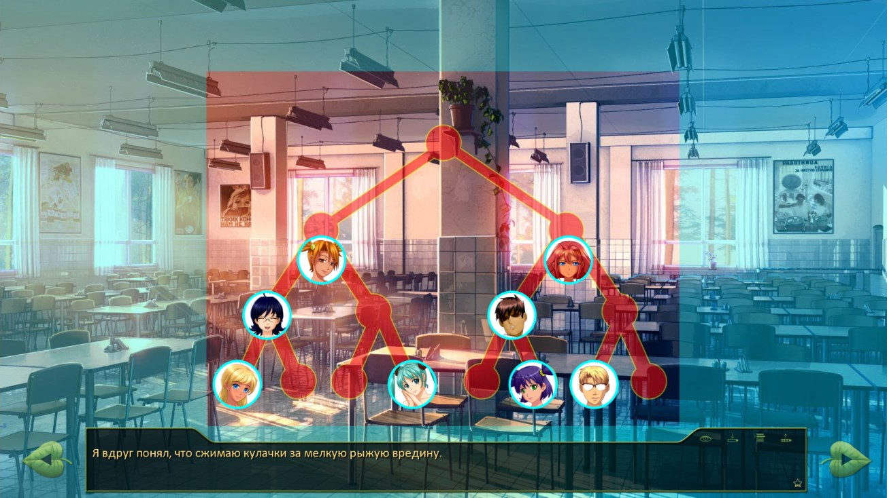

7 дней лета, билд 0.20a (Хаб сычей)
Страница 3 из 4 •  1, 2, 3, 4
1, 2, 3, 4
Re: 7 дней лета, билд 0.20a (Хаб сычей)
автор Tabris_d в Ср 29 Июл 2015 - 3:51
- Код:
3733 if mt_pt > 0:

Tabris_d- Сыч

- Сообщения : 69
Дата регистрации : 2015-05-18
Re: 7 дней лета, билд 0.20a (Хаб сычей)
автор 7dl-kun в Ср 29 Июл 2015 - 9:29

7dl-kun- Находка для шпиона

- Сообщения : 3026
Дата регистрации : 2014-09-07
Откуда : здесь столько наркоманов?
Re: 7 дней лета, билд 0.20a (Хаб сычей)
автор nuttyprof в Чт 30 Июл 2015 - 0:40
- День второй, вечерние события. карта.:
Не рановато ли для второго дня
строки 6167-6168 и 8892 и ниже?
Или это так задумано?

nuttyprof- Хикка

- Сообщения : 102
Дата регистрации : 2015-05-25
Возраст : 45
Откуда : Юг
7dl-kun- Находка для шпиона
- Сообщения : 3026
Дата регистрации : 2014-09-07
Откуда : здесь столько наркоманов?
Re: 7 дней лета, билд 0.20a (Хаб сычей)
автор peregarrett в Чт 30 Июл 2015 - 10:18
- Код:
"Я обернулся и с умным лицом произнёс в закрытую дверь:"
me "А меня зовут Семён."
"С умным видом ответил я. {w}Надеюсь, дальше по списку ничего столь же опасного для здоровья не предвидится…"
2694 - так вроде сцена на карте обхода выключена, не? Сюда по-любому попадаем, уже заполнив лист.
и это условие вместе с текстом лучше перенести перед 2680, складнее получается.

peregarrett- Находка для шпиона
- Сообщения : 3264
Дата регистрации : 2014-09-07
Возраст : 36
Re: 7 дней лета, билд 0.20a (Хаб сычей)
автор 7dl-kun в Чт 30 Июл 2015 - 10:58
7dl-kun- Находка для шпиона
- Сообщения : 3026
Дата регистрации : 2014-09-07
Откуда : здесь столько наркоманов?
Re: 7 дней лета, билд 0.20a (Хаб сычей)
автор peregarrett в Чт 30 Июл 2015 - 12:46
7dl-kun пишет:Про "складнее" не понял нифига... Тем более, что и нумерация строк у меня съехала.
- Код:
label alt_day2_event_estrade:
scene bg ext_stage_big_day with fade
window show
if alt_day2_rendezvous == 3:
"Утренний ценный груз не давал мне покоя."
"Это же целый бесхозный усилок!"
"Я забрался на сцену и устроил беглую ревизию аппаратуре."
if alt_day2_loki_minijack:
jump alt_day2_dubstep2
else:
jump alt_day2_phone
else:
"Раз уж я решил осмотреть весь лагерь, грех было бы не увидеть центр местной самодеятельности — эстраду."
"Свежеоструганные доски приятно пахли смолой, а тенёк внутри так и манил уйти с солнцепёка."
"Осмотревшись — никого вокруг замечено не было — я поднялся на сцену."
window hide
if alt_day2_necessary_done == 4:
window hide
"А дальше двигаться было некуда - я заполнил все графы с подписями."
"До обеда было ещё немного времени, поэтому я решил прогуляться к эстраде."
jump alt_day2_dubstep
else:
jump alt_day2_phone
Текст под if alt_day2_necessary_done == 4 логично ложится перед if alt_day2_rendezvous == 3, а не после. Иначе получается, что уже пришел, а потом решает снова прогуляться.
И условие alt_day2_necessary_done == 4 всегда true, потому что на карте сцена недоступна.
peregarrett- Находка для шпиона
- Сообщения : 3264
Дата регистрации : 2014-09-07
Возраст : 36
Re: 7 дней лета, билд 0.20a (Хаб сычей)
автор Arlien в Чт 30 Июл 2015 - 19:34
За Леночку с ее ветвистостью даже браться страшно.
Алсо! Пока катал, обнаружил на втором Мику-танце историю про некую Риоко. И вот знаете, тут у меня малость подгорело! Нет, ну это Семен, да? Хикка-социофоб-мизантроп, да? А какого бура у него акуитительные истории про кучу разных бывших на любой случай жизни?..
По пальцам не считал, статистику не сводил, так - чисто по памяти, так что смело не берите в расчет, просто зарепорчу впечатления на всякий пожарный.
Arlien- Людовед

- Сообщения : 1322
Дата регистрации : 2014-09-08
Re: 7 дней лета, билд 0.20a (Хаб сычей)
автор 7dl-kun в Чт 30 Июл 2015 - 19:46
Да, Мику по рукам надавал, чтобы не воображала себе всякого (=
7dl-kun- Находка для шпиона
- Сообщения : 3026
Дата регистрации : 2014-09-07
Откуда : здесь столько наркоманов?
Re: 7 дней лета, билд 0.20a (Хаб сычей)
автор peregarrett в Пт 31 Июл 2015 - 5:38
alt_day2:
4018
- Код:
else:
extend " какая-то незнакомая японка."
В турнирной таблице опять аватарки съехали
- скриншот:

5877 - Опечатка "Дверь с кухонный блок"
alt_day3
2161 -
- Код:
elif alt_day3_duty:
"Как мы и договаривались со Славей, я заглянул в домик, где меня уже дожидались плавки, и направился на пляж."
Эвенты в 3 дне - продолжает кидать на карту даже после эвента с жуками и поиска диджея. Судя по переменной day_3_necessaryAf_done - предполагалось, что доступно конечное число эвентов, но получается, единственный способ закончить с эвентами и попасть-таки на ужин - это пойти поспать, либо доделать техноквест. Так и должно быть?
Кстати, получается, с этими хлопотами пропускаем полдник? Хотя ОД после поиска жуков говорит "полдник через 10 минут", но в столовую так и не заходим.
peregarrett- Находка для шпиона
- Сообщения : 3264
Дата регистрации : 2014-09-07
Возраст : 36
Re: 7 дней лета, билд 0.20a (Хаб сычей)
автор Chess в Пт 31 Июл 2015 - 6:28
Тащемта от того, что он её видел, незнакомой она не перестаёт быть.Все-таки в столовой он ее видел, и окрестил аниме-девочкой. Даже если не садился с ней обедать, все равно она уже не "какая-то незнакомая", а вполне определенная японка.

Chess- Находка для шпиона
- Сообщения : 3798
Дата регистрации : 2014-10-05
Откуда : Город на краю света
Re: 7 дней лета, билд 0.20a (Хаб сычей)
автор 7dl-kun в Пт 31 Июл 2015 - 11:18
Координаты плавающих фишек поправил - всё-таки ренпай через одно место эти координаты считывает.
7dl-kun- Находка для шпиона
- Сообщения : 3026
Дата регистрации : 2014-09-07
Откуда : здесь столько наркоманов?
Re: 7 дней лета, билд 0.20a (Хаб сычей)
автор openplace в Пт 31 Июл 2015 - 18:39
8203 нужно sl, это Славина фраза.
Ну и по Сыче-хабу 4 дня. Проходил за Герка, но это не суть важно. Вышел на if alt_day3_dv_date (строки 261-285): проснулся в отдельном домике, Алиса спала в домике вожатой. Вышел на улицу и ВНЕЗАПНО (286 jump alt_day4_neu_dv_morning) оказался на импровизированной площадке с Алисой. Сдаётся мне, тут не хватает нескольких строчек про то, как они встретились после ночи, о чём говорили. В строчках 180-202 (и 315-353) это есть, но там условия elif alt_day2_rendezvous == 3 and not alt_day3_dv_dj (и, соответственно, if alt_day3_dv_reunion or (alt_day2_rendezvous == 3 and not alt_day3_dv_dj).

openplace- Хикка
- Сообщения : 111
Дата регистрации : 2015-05-02
Re: 7 дней лета, билд 0.20a (Хаб сычей)
автор 7dl-kun в Пт 31 Июл 2015 - 19:26
Сыча поправлю, спасибо.
7dl-kun- Находка для шпиона
- Сообщения : 3026
Дата регистрации : 2014-09-07
Откуда : здесь столько наркоманов?
Re: 7 дней лета, билд 0.20a (Хаб сычей)
автор openplace в Сб 1 Авг 2015 - 1:45
- Лена-ФЗ-рут и события, ему сопутствующие:
- alt_day3.rpy
3380 th "Потому вопрос - а не влюбился ли этот приставучий придурок - совершенно резонен."
------------------
3417 "Хотя, помнится, я здесь и в прошлый раз неплохо всё рассмотрел." - это если Семён (а точнее, Герк) действительно заглядывал внутрь. Если взять в провожатые Алису, то при первом посещении музклуба Сеня в здание не заходит. Поэтому в 3416 вместо if alt_day2_muz_done лучше подошло бы if alt_day2_inmusic или что-то наподобие.
alt_un_fz_route.rpy
2370 "Подбородок онемел, по внутренней стороне щёк побежали ручейки безвкусной слюны - верный показатель того, что кого-то сейчас вывернет…"
------------------
2608 "В лесу и правда было жутковато, поэтому реакция девочки меня нисколько не удивила — сам бы с удовольствием спрятался за кого-нибудь."
2609 "Или пробежал бы на скорость, как можно быстрее, зная, что где-то в конце пути ожидает освещённое место." - Эти две строки, скажем так, выглядят странновато, если идти в старый корпус с Электроником. Кажется, есть смысл дать им какое-либо условие появления.
openplace- Хикка
- Сообщения : 111
Дата регистрации : 2015-05-02
Re: 7 дней лета, билд 0.20a (Хаб сычей)
автор dancerh в Вт 4 Авг 2015 - 2:47

dancerh- Ньюфаг

- Сообщения : 7
Дата регистрации : 2015-06-10
Возраст : 34
Re: 7 дней лета, билд 0.20a (Хаб сычей)
автор HOXAJI в Вт 4 Авг 2015 - 4:02
dancerh пишет:Вместо выход на Славя-рут (4день) выводит на Сыч-рут, я так понимаю, это пока временно вместо заглушки?
У меня все нормально, выходит на не дописанные руты. Пробуй еще значит. =)

HOXAJI- Ньюфаг
- Сообщения : 13
Дата регистрации : 2015-08-02
Re: 7 дней лета, билд 0.20a (Хаб сычей)
автор peregarrett в Вт 4 Авг 2015 - 4:06
После подхода кибернетиков отправляемся вербовать Алису в радио-диджеи. "Одинокий пастух" продолжает завывать, вплоть до возвращения на площадь.
Ну и наконец-то к обнове.
Вечер, поиск ответов в домике
3340 sl "Я снова с тем же вопросом." - с каким? Явно это к какому-то из ранних событий, которые я пропустил.
После поиска ответов в домике зачем-то выходим наружу и снова заходим во время вечернего подведения итогов. После домика нужен свой вход на финиш, наверно...
Появление рюкзака отмечается как само собой разумеющееся, хотя по прохождению нигде не упоминался. Заходил через свой дом и на выходе столкнулся с Ульяной.
А так, к происходящему больше всего подходит любимая картинка Чесса с непонимающими котами. Заинтригован, жду продолжения, буду пробовать другие входы на сыча.
peregarrett- Находка для шпиона
- Сообщения : 3264
Дата регистрации : 2014-09-07
Возраст : 36
Re: 7 дней лета, билд 0.20a (Хаб сычей)
автор Chess в Вт 4 Авг 2015 - 4:56
А так, к происходящему больше всего подходит любимая картинка Чесса с непонимающими котами.
- Схорони уже где-нибудь:

Chess- Находка для шпиона
- Сообщения : 3798
Дата регистрации : 2014-10-05
Откуда : Город на краю света
Re: 7 дней лета, билд 0.20a (Хаб сычей)
автор peregarrett в Вт 4 Авг 2015 - 11:59
peregarrett- Находка для шпиона
- Сообщения : 3264
Дата регистрации : 2014-09-07
Возраст : 36
Re: 7 дней лета, билд 0.20a (Хаб сычей)
автор 7dl-kun в Вт 4 Авг 2015 - 15:30
7dl-kun- Находка для шпиона
- Сообщения : 3026
Дата регистрации : 2014-09-07
Откуда : здесь столько наркоманов?
Re: 7 дней лета, билд 0.20a (Хаб сычей)
автор peregarrett в Вт 4 Авг 2015 - 15:54
peregarrett- Находка для шпиона
- Сообщения : 3264
Дата регистрации : 2014-09-07
Возраст : 36
Re: 7 дней лета, билд 0.20a (Хаб сычей)
автор Arlien в Вт 4 Авг 2015 - 16:34
Конкретно на сычеруте, правда, действительно не особо нужное - главный герой рута Семен, мы имеем его ПОВ как основу повествования, а при ПОВе какие-то дополнительные меры раскрытия особо и не нужны - мы и так наблюдаем всю егошнюю изнанку олл зе вей.
Arlien- Людовед
- Сообщения : 1322
Дата регистрации : 2014-09-08
Re: 7 дней лета, билд 0.20a (Хаб сычей)
автор Moonshine в Ср 5 Авг 2015 - 4:51
- Спойлер:
Снова сыграл за сыча. Попробовал вылететь с Ленкиного рута. Получилось… странно.
Начинается все утром третьего дня за завтраком. Лена выдает «ты ведь так хорошо смотришься с ней рядом». Щито? Включил виджет. На тот момент ЛП с Леной -7, Мику, Славя – по одному, Ульяна – 3, Алиса – 0. Ну да ладно, черт разберет, что там у нее в голове. Она убегает, вроде как выходим следом за ней из столовой. Вылезает карта, Ленку найти и выяснить, что это вообще было, нельзя. Допустим, Семен вообще забил, почему нет. Начинаем оббегать лагерь. Ни с кем не выйдет пересечься, кроме Алисы на сцене. И тут при любом раскладе Семен говорит, что пригласил бы Алису потанцевать. Окей.
Если потом на обеде садимся с Леной, то утренних непоняток как и не было. Не теряя времени, Семен приглашает её на танцы. Дальше – больше. Если соглашаемся на поиск ведущего и идем уговаривать Мику, то Семен, при выборе любого варианта, и у нее выпросит танец, да еще и в присутствии Лены. Такие дела. Когда бежим к Алисе, во многом дублируется диалог после завтрака. Она снова обзывает танцульки идиотизмом, а у Семена ВНЕЗАПНО пролетает мысль о том, что ему захотелось её пригласить. Но сцена с гитарой и сигаретами сама по себе очень хороша. Тут я понимаю, что очень жду Алиса-DJ рут.
Потом все нормально. Не важно, танцуем первый танец или нет, когда прибегает Электроник, Семен заикается про Лену, но та отправляет его валиться с крыши, а Сама уходит в медпункт. Ну и успешно вылетаем(или падаем? Ух какой символизм) на рут сыча.
На четвертый день заметил следующие вещи. Если выпрашиваем волейбольный матч (кстати, проиграл с FIGHT момента), то после него Ульяна нас посвящает в свой план мести, и мы договариваемся встретиться у медпункта после ужина. Семен об этом забывает и отправляется «искать ответы». Если идем в домик и достаем из рюкзака конфеты, то Ульяна на карте появляется. Но только про свою коварную затею тоже забывает и в любом случае просто убегает. Выйти на тропу войны, можно только пойдя на сцену, на которой вообще светится Мику. Нелинейность, конечно, вещь замечательная, но не слишком ли тут все запутано? Там уже Алиса попросит чем-то помочь ей и Ульяне, что не выглядит на 100% связанным с нашим ранним планом. И когда Семен все-таки ввязывается в это, то ведет себя так, будто вообще не в курсе дела. План кардинально поменялся?
Такие вот наблюдения.
Ах да, сценка в магазине с дисками 10 из 10.

Moonshine- Маргинал

- Сообщения : 341
Дата регистрации : 2015-05-05
Re: 7 дней лета, билд 0.20a (Хаб сычей)
автор 7dl-kun в Ср 5 Авг 2015 - 5:14
- Спойлер:
- Спасибо, учту пожелания.
Значит, причесать по логике линейку поведения в третьем дне для Лены/Алисы/Мику, в частности с танцами и диджеингом. Буду думать.
Коварная месть запланирована на пятый день, в четвёртом дне мы ищем ОТВЕТЫ и балуемся. Хотя не спорю, пакость в клубах вполне может претендовать на генеральную репетицию мести. Но согласен, со сроками я малость промахнулся, да и запланированное на вечер купание тоже пролетело мимо. Вот что происходит, когда пишешь три рута сразу (=
За магазин и FIGHT-сцену спасибо, я старался (+
7dl-kun- Находка для шпиона
- Сообщения : 3026
Дата регистрации : 2014-09-07
Откуда : здесь столько наркоманов?
Страница 3 из 4 • 1, 2, 3, 4